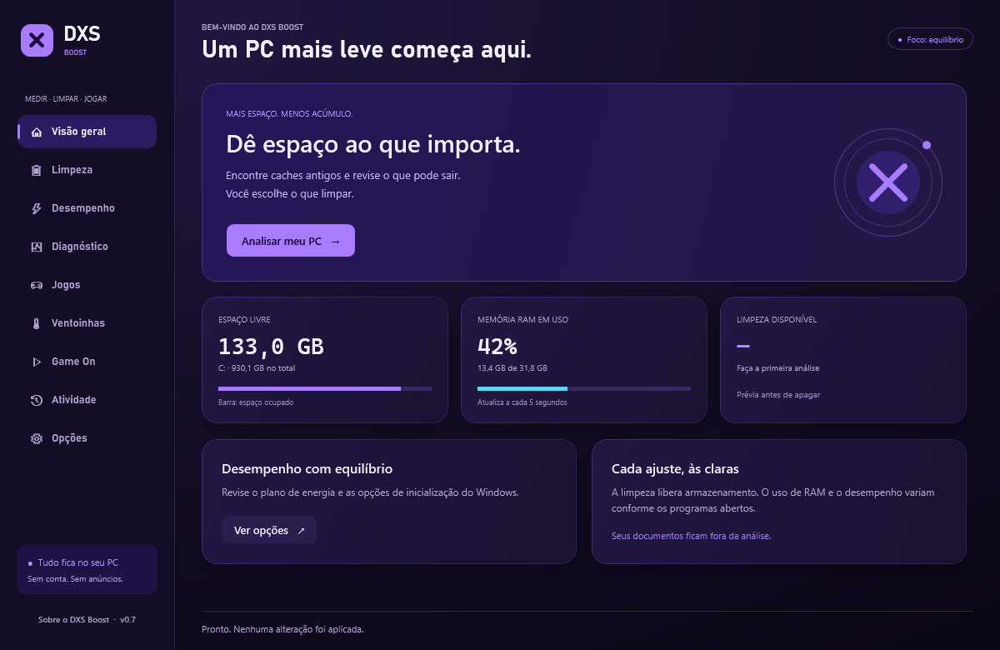
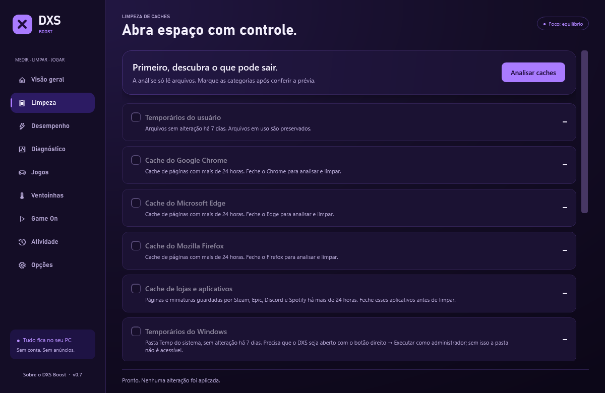
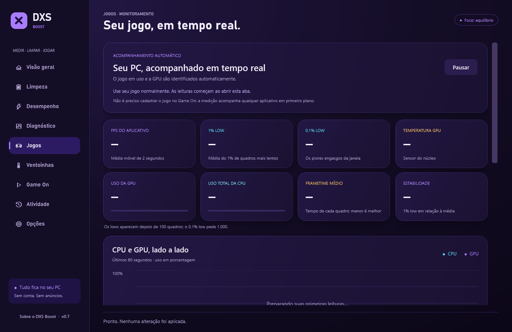
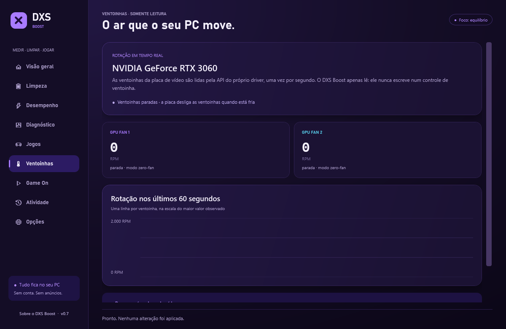
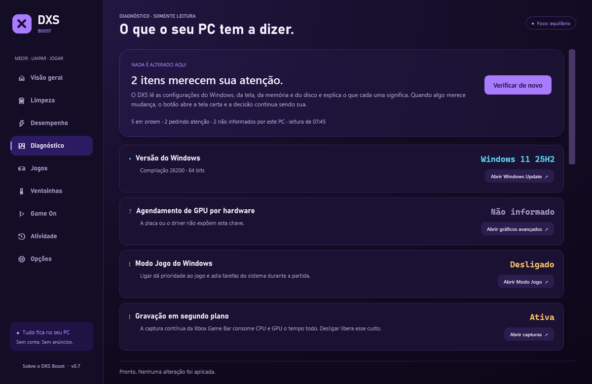
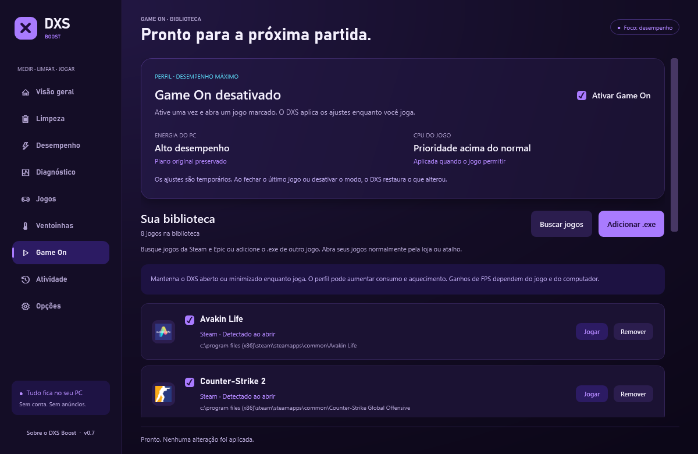
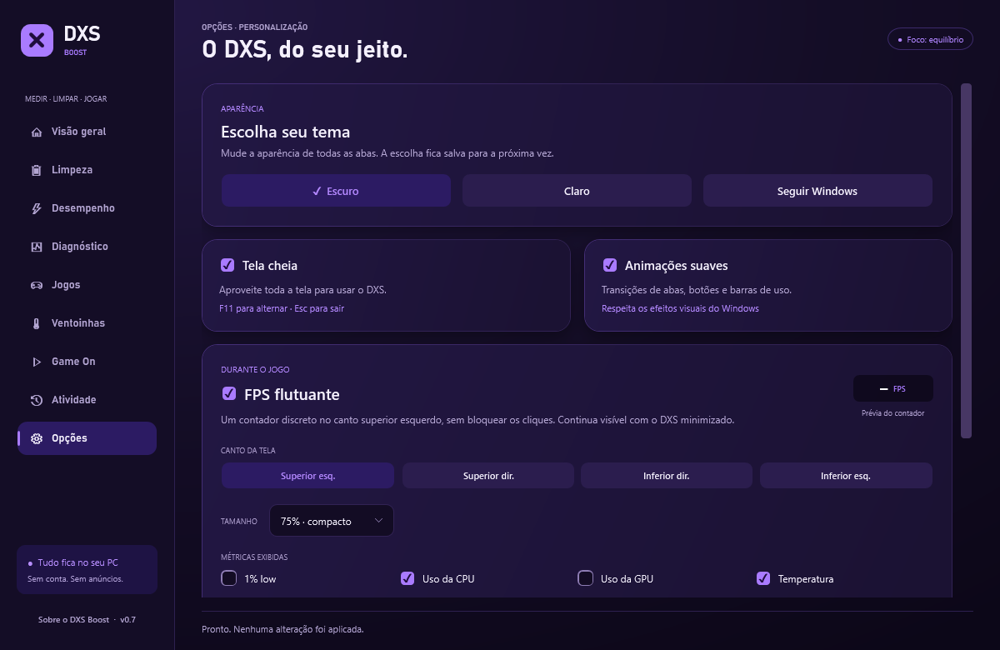
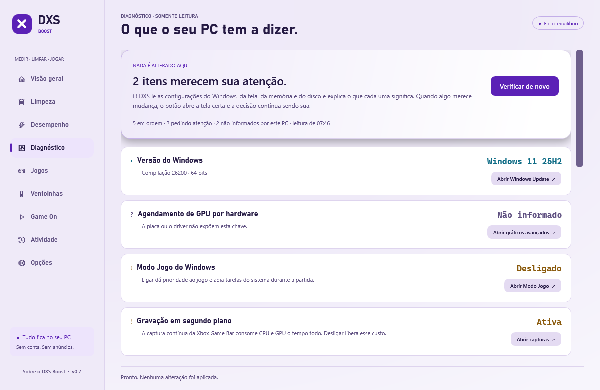

O estado do PC em três números.
Espaço livre, memória em uso e quanto a limpeza tem pra oferecer. A barra de RAM se atualiza a cada cinco segundos, e nada é apagado antes de você ver a prévia.
Windows 10 e 11 · versão 0.8.1
O DXS Boost mostra FPS, 1% low, frametime, CPU, GPU e temperatura enquanto você joga — e grava a partida inteira quando você quer comparar. Também diagnostica o Windows, encontra caches antigos e prepara a máquina antes da sessão. Tudo local, sem conta e sem anúncios.
Instalador · 3,5 MB · 64 bits
Requer .NET Framework 4.8

Uma volta pelo app
Role devagar — a janela ao lado acompanha.
Espaço livre, memória em uso e quanto a limpeza tem pra oferecer. A barra de RAM se atualiza a cada cinco segundos, e nada é apagado antes de você ver a prévia.
Caches de lojas e aplicativos, temporários do Windows, relatórios de erro e shaders de NVIDIA e AMD. O catálogo é fechado: só entram pastas conhecidas. Seus documentos ficam fora da análise, sempre.

O DXS identifica sozinho o jogo em primeiro plano e a GPU mais ativa. Sem partida aberta ele escreve travessão em vez de inventar número — como nesta tela.

RPM e porcentagem de cada ventoinha da GPU, com gráfico dos últimos 60 segundos. Somente leitura: o DXS nunca escreve num controle de ventoinha, e não instala driver pra isso.

Windows, tela, memória e disco. O DXS lê, explica o que cada configuração significa e abre a tela certa do sistema — a decisão de mudar continua sendo sua.

Encontra os jogos de Steam, Epic, GOG e Ubisoft Connect e aplica energia e prioridade temporárias enquanto você joga. Ao fechar o jogo, restaura exatamente o que alterou — e guarda um registro pra conseguir restaurar mesmo se algo falhar no meio.

Canto da tela, tamanho e quais métricas aparecem: 1% low, CPU, GPU, temperatura. Ele continua visível com o DXS minimizado e não bloqueia cliques do jogo.

Por que o 1% low importa
Um jogo a 150 FPS de média pode travar visivelmente várias vezes por minuto. A média não conta isso: ela dilui os quadros lentos no meio dos rápidos.
O 1% low é a média só do rabo lento da distribuição — as barras em ciano, aqui os cinco piores de cem. É o número que corresponde ao que você sente com a mão, e não ao que aparece bonito no print.
O DXS calcula 1% low e 0,1% low ao vivo, sobre uma janela de 60 segundos. Eles só aparecem com material suficiente: 100 quadros para o 1% e 1.000 para o 0,1%. Abaixo disso o balde teria um quadro só, e o resultado seria ruído com cara de medida.
Dois temas, uma luz
As paradas do gradiente, as bordas e as sombras têm valores próprios em cada tema, pra que a luz continue vindo do mesmo canto superior esquerdo.

Também tem
Grava a partida do começo ao fim e entrega médias, lows, frametime, picos de CPU e GPU, temperatura máxima e uma leitura de gargalo. Trocar de jogo encerra a gravação — misturar dois inventaria um resultado.
O resumo e o frametime de cada quadro, com ponto decimal invariante, pra comparar sessões, configurações e computadores diferentes numa planilha.
Um histórico do que foi limpo e do que foi alterado, pra você saber o que o app fez na sua máquina em vez de confiar na palavra dele.
Mantém o Game On e o contador ativos com a janela recolhida. Aparece e some conforme a sua opção, inclusive ao fechar a janela.
Só a captura de FPS precisa de administrador, e ela vive num auxiliar dedicado que não aceita caminho vindo de fora. Recusar o aviso mantém CPU, GPU e temperatura funcionando.
Se o FPS não aparecer, um clique reúne o estado da captura — incluindo as mensagens do próprio PresentMon — sem nenhum dado pessoal, pronto pra colar num relato.
Sobre o gasto
Instalação
Pra atualizar, feche o DXS e execute o instalador novo: preferências, favoritos e histórico são mantidos. Pra remover, use Aplicativos instalados nas Configurações do Windows — a desinstalação preserva seus dados.
Esta edição ainda não tem assinatura digital. O Windows vai mostrar um aviso do SmartScreen ao abrir o instalador — é o comportamento normal pra qualquer programa sem certificado, e você precisa clicar em Mais informações → Executar assim mesmo. Se preferir esperar por uma versão assinada, é uma escolha razoável.
Sem promessa vazia
"Boost" é a marca, não uma promessa. O app não garante ganho de FPS nem de RAM. Ele mede, mostra e deixa a decisão com você — e diz isso em todas as telas onde importa.
A limpeza libera armazenamento. O uso de memória e o desempenho variam conforme os programas abertos, e ganho em jogo depende do jogo e do computador. Ganho de desempenho dos ajustes do Game On em jogos reais ainda não foi medido.
Seus dados ficam em %LOCALAPPDATA%\DXSBoost. Sem conta, sem anúncios, sem telemetria, sem serviço em segundo plano e sem inicialização automática.
Instala em menos de um minuto e mede a próxima partida.